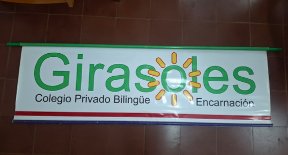
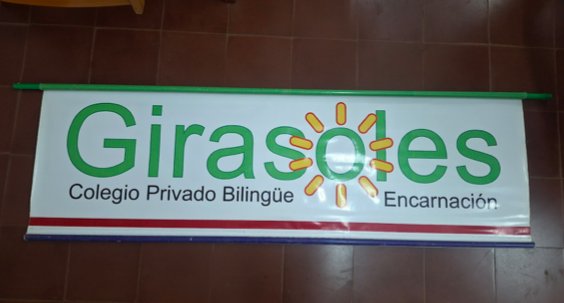

Identidad y Filosofía
La cultura institucional es el conjunto de valores, creencias y tradiciones que definen el comportamiento de toda la comunidad educativa. En Girasoles, esta cultura se ve reflejada en nuestra historia, nuestro servicio, las normas, celebraciones y en la forma en que nos relacionamos día a día.
Visión
Formar ciudadanos autónomos,críticos, emprendedores y con alto sentido éticos. Personas comprometidas con al democracia, abiertas a la diversidad y plurilingües
Misión
Educar desde la más temprana edad hombres y mujeres de conducta y pensamiento responsable, constructivos hacia la ciencia, el arte y la cultura; con capacidad de expresarse en ambas lenguas nacionales oficiales y en lengua inglesa con fluidez y precisión.
Valores Institucionales
Respeto, responsabilidad, empatía, disciplina, trabajo en equipo y honestidad son pilares que guían nuestras acciones.
El Código de Convivencia
El código de convivencia acompaña al estudiante desde el nivel inicial hasta el final de la Educación Media. Es un documento dinámico basado en una tabla de cotejo, que mide el desarrollo de habilidades académicas y valores mediante las categorías:
- L: Logró
- NL: No logra o necesita mejorar
Este enfoque se inspira en la Ley General de Educación, priorizando la formación integral: conocimientos (habilidades duras) y valores (habilidades blandas).
Uniforme Institucional
Desde los inicios se adoptaron los colores bordó y amarillo, representando la esencia del girasol: luz, crecimiento y grandeza. Con el tiempo surgieron variaciones como el uso de azul en la media y opciones más cómodas como jeans diariamente.
El uniforme es visto como comodidad, no como exigencia estética: “el verdadero conocimiento está dentro, no en la ropa”.
Tradiciones que nos unen
Las celebraciones fortalecen el sentido de pertenencia y la identidad cultural:
- San Juan — Tradición e identidad paraguaya
- Halloween — Aprendizaje de la cultura americana sin enfoque religioso
- Spelling Bee — Competencia académica destacada
- FECITEC — Feria institucional de ciencia y tecnología
Infraestructura que impulsa el aprendizaje
La inversión constante en la infraestructura permite el crecimiento académico y la jornada extendida, un atributo que diferencia a Girasoles desde sus inicios.
- Polideportivo
- Salón Turquesa
- Tinglados para actividades y actos
- Edificio Madrhi — “madre e hijos”, símbolo de comunidad
Significado del nombre y el logo
El girasol simboliza la búsqueda permanente de la luz — la sabiduría. En tiempos difíciles, los girasoles se miran entre sí para sostenerse, así como nuestra comunidad escolar.
El logo actual fue diseñado por el hijo de la principal durante FECITEC, reforzando identidad y reconocimiento.
Entrevista con la Principal
María Nilda Martínez impulsó un proyecto educativo inspirado en modelos internacionales, especialmente del sistema japonés y de instituciones estadounidenses. Formó sus propios docentes bilingües y estableció un horario extendido para asegurar el aprendizaje eficaz del inglés.
Para ella, Girasoles busca formar “sabios cuerdos”: buenos hijos, buenas personas y buenos ciudadanos.
Compromiso con la excelencia
La cultura institucional de Girasoles ha evolucionado acompañado de infraestructura moderna y una oferta educativa única en la zona. Los éxitos y proyección de los egresados son el mayor orgullo y evidencia de que el camino es el correcto.


 
